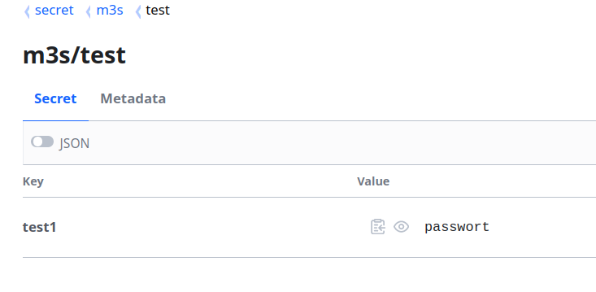

Introduction - mesos-compose, the docker-compose framework for Apache Mesos
Requirements
- Apache Mesos min 1.6.0
- Mesos with SSL and Authentication is optional
- Redis Database
- Docker Compose Spec 3.9
Example
Compose file with all supported parameters:
version: '3.9'
services:
app:
image: alpine:latest
command: "sleep"
arguments: ["1000"]
restart: always
volumes:
- "12345test:/tmp"
environment:
MYSQL_HOST: test
hostname: test
container_name: test
container_type: docker
shell: true
mesos:
task_name: "mc:test:app1" # an alternative taskname
executer:
command: "/mnt/mesos/sandbox/my-custom-executor"
fetch:
- value: http://localhost/my-custom-executor
executable: true
extract: false
cache: false
labels:
traefik.enable: "true"
traefik.http.routers.test.entrypoints: "web"
traefik.http.routers.test.service: "mc_test_app1_80" # if an alternative taskname is set, we have to use it here to
traefik.http.routers.test.rule: "HostRegexp(`example.com`, `{subdomain:[a-z]+}.example.com`)"
network_mode: "BRIDGE"
ports:
- "8080:80"
- "9090"
- "8081:81/tcp"
- "8082:82/udp"
- "8082:82/http"
- "8082:82/https"
- "8082:82/h2c"
- "8082:82/wss"
network: default
ulimits:
memlock:
soft: -1
hard: -1
nofile:
soft: 65536
hard: 65536
healthcheck:
delay_seconds: 15
interval_seconds: 10
timeout_seconds: 20
consecutive_failures: 3
grace_period_seconds: 10
command:
value: "mysqladmin ping -h localhost"
http:
scheme:
port:
path:
statuses:
tcp:
port:
deploy:
placement:
constraints:
- "node.hostname==localhost"
- "node.platform.os==linux"
- "node.platform.arch==arm"
replicas: 1
resources:
limits:
cpus: 0.01
memory: 50
networks:
default:
external: true
name: weave
driver: bridge
volumes:
12345test:
driver: local
We can also use yaml anchors and more then one service in a compose file:
version: '3.9'
common: &common
image: alpine:latest
restart: always
labels:
biz.aventer.mesos_compose.container_type: "DOCKER"
services:
app1:
<<: *common
command: ["sleep", "1000"]
app2:
<<: *common
command: ["sleep", "2000"]
networks:
default:
external: true
name: weave
volumes:
12345test:
driver: local
Push these compose file to the framework. Every compose file needs to have an own project name.
curl -X PUT http://localhost:10000/api/compose/v0/<PROJECTNAME> --data-binary @docs/example/docker-compose.yml


To scale the service, just execute the same call again. To update a already existing docker-compose project, call:
curl -X UPDATE http://localhost:10000/api/compose/v0/<PROJECTNAME> --data-binary @docs/example/docker-compose.yml
Configuration
The following environment variables are available:
Mesos-Compose CLI Installation for Mesos-CLI
If you do not already have installe the mesos cli, please follow the steps under "Install Mesos-CLI" first.
The installation of the Mesos-Compose plugin for mesos-cli is done in few steps.
First, edit the mesos-cli config file.
vim .mesos/config.toml
Add the absolute path of the plugin into the plugin array:
# The `plugins` array lists the absolute paths of the
# plugins you want to add to the CLI.
plugins = [
"/example/mesos-compose/mesos_cli/compose"
]
[compose.<FRAMEWORK_PREFIX>]
principal = "<framework username>"
secret = "<framework password>"
A example for multiple mesos-compose frameworks:
[compose.mc-a]
principal = "<framework username>"
secret = "<framework password>"
[compose.mc-b]
principal = "<framework username>"
secret = "<framework password>"
As you can see, the "compose" section have to extend with the prefix of Mesos-Compose framework.
Now we will see the M3s plugin in mesos cli:
mesos-cli help
Mesos CLI
Usage:
mesos (-h | --help)
mesos --version
mesos <command> [<args>...]
Options:
-h --help Show this screen.
--version Show version info.
Commands:
agent Interacts with the Mesos agents
compose Interacts with the Mesos-Compose Framework
config Interacts with the Mesos CLI configuration file
framework Interacts with the Mesos Frameworks
m3s Interacts with the Kubernetes Framework M3s
task Interacts with the tasks running in a Mesos cluster
Install Mesos-CLI
Download the mesos-cli binary for linux from here. Extract the mesos-cli and copy the file into your PATH directory.
Mesos-Compose CLI Usage
The Mesos-Compose framework does support the new version of mesos-cli.
The following parameters are currently supported:
mesos-cli compose help
Interacts with the Mesos-Compose Framework
Usage:
mesos compose (-h | --help)
mesos compose --version
mesos compose <command> (-h | --help)
mesos compose [options] <command> [<args>...]
Options:
-h --help Show this screen.
--version Show version info.
Commands:
framework Framework Commands.
info Get information about the running Mesos compose framework.
kill Kill a single task (ID) or a whole service (Task Name)
launch Launch Mesos workload from compose file
list Show all running tasks.
restart Restart a single task (ID) or a whole service (Task Name)
update Update service from compose file
version Get the version number of Mesos compose
Launch Workload
To launch workload, you need a compose file.
mesos-cli compose launch
Launch Mesos workload from compose file
Usage:
mesos compose launch (-h | --help)
mesos compose launch --version
mesos compose launch [options] <framework-name> <project> <compose-file>
Options:
-h --help Show this screen.
Description:
Launch Mesos workload from compose file
Example:
mesos compose launch mc allwebserver docs/example/test-http.yaml
mcis the Mesos registration name of the framework.allwebserveris the project name. We can also see it as subcategory.
List all Tasks managed my the framework
mesos-cli compose list mc
ID Task Name State Mesos Agent
test_test1.55662bcc-7268-905e-333a-47a03314d7d5.0 mc:test:allwebserver TASK_RUNNING testagent.test.internal
Update Workload
To launch workload, you need a compose file.
mesos-cli compose update
Update service from compose file
Usage:
mesos compose update (-h | --help)
mesos compose update --version
mesos compose update [options] <framework-name> <project> <compose-file>
Options:
-h --help Show this screen.
Description:
Update service from compose file
Example:
mesos compose update mc allwebserver test1 docs/example/test-http.yaml
mcis the Mesos registration name of the framework.allwebserveris the project name. We can also see it as subcategory.test1is the service name of the container we defined in our compose file.
Restart all tasks of a service
A Service can run multiple instances of a task. The following example will show, how to restart the entire service.
mesos-cli compose restart
Restart a single task (ID) or a whole service (Task Name)
Usage:
mesos compose restart (-h | --help)
mesos compose restart --version
mesos compose restart [options] <framework-name> <task>
Options:
-h --help Show this screen.
Description:
Use the "ID" to restart a single task or the "Task Name" to restart the entire service.
Example:
mesos compose restart mc mc:test:allwebserver
mcis the Mesos registration name of the framework.mc:test:allwebserveris the Task-Name.
Restart a single Task
Sometimes it's enough to restart a single task and not the entire service.
mesos-cli compose restart
Restart a single task (ID) or a whole service (Task Name)
Usage:
mesos compose restart (-h | --help)
mesos compose restart --version
mesos compose restart [options] <framework-name> <task>
Options:
-h --help Show this screen.
Description:
Use the "ID" to restart a single task or the "Task Name" to restart the entire service.
Example:
mesos compose restart mc test_test1.55662bcc-7268-905e-333a-47a03314d7d5.0
mcis the Mesos registration name of the framework.test_test1.55662bcc-7268-905e-333a-47a03314d7d5.0is the ID of the Task we want restart.
Kill a Service or a single Task
To kill a service or a single task is equvalent to restart.
mesos-cli compose kill
Kill a single task (ID) or a whole service (Task Name)
Usage:
mesos compose kill (-h | --help)
mesos compose kill --version
mesos compose kill [options] <framework-name> <task>
Options:
-h --help Show this screen.
Description:
Use the "ID" to Kill a single task or the "Task Name" to kill the entire service.
Bridged Network
The networkmode "bridge" will start the container with a dynamic host port.
Example:
version: '3.9'
services:
redis-bridge:
image: redis:latest
ports:
- "9401:6379"
network_mode: "bridge"
docker ps will show as the container:
docker ps
CONTAINER ID IMAGE COMMAND CREATED STATUS PORTS NAMES
b15c1ba19cc7 redis:latest "docker-entrypoint.s…" 11 minutes ago Up 11 minutes 0.0.0.0:31916->6379/tcp mesos-42da8556-5bec-4bba-b8e0-98d2e74c6d20]
User Network
The networkmode "user" will start the container without a port. The container will be deployed in the defined CNI network.
Example:
version: '3.9'
services:
redis-user:
image: redis:latest
ports:
- "9401:6379"
network_mode: "user"
network: default
networks:
default:
external: true
name: mini
docker ps will show as the container:
docker ps
CONTAINER ID IMAGE COMMAND CREATED STATUS PORTS NAMES
ed0350dd8632 redis:latest "docker-entrypoint.s…" 16 minutes ago Up 16 minutes 6379/tcp mesos-672d1601-42c6-4a6f-be92-4ddc6f271c55
Host Network
The networkmode "host" will start the container with the exposed port inside of the container.
Example:
version: '3.9'
services:
redis-host:
image: redis:latest
network_mode: "host"
docker ps will show as the container:
docker ps
CONTAINER ID IMAGE COMMAND CREATED STATUS PORTS NAMES
52b853e8272b redis:latest "docker-entrypoint.s…" 16 minutes ago Up 16 minutes mesos-16aa16b9-903f-45cc-bd77-5aacfce5d87d
How to use Hashicorp Vault with mesos-compose
Mesos-Compose support to store secrets in Hashicorp Vault (short vault). The configuration is so simple as possible.
1. Set the environment parameter
Therefore mesos-compose can use vault, we have to configure the following parameter.
export VAULT_URL=https://<YOUR_VAULT_IP>:<YOUR_VAULT_PORT>
export VAULT_TOKEN=<YOUR_VAULT_TOKEN>
2. Create a secret in Vault
Create a secret in a KV store.

3. Use the secret
Use the secret in the following term.
vault://<SECRET_PATH>:<KEY_NAME>
As example:
version: '3.9'
services:
test1:
image: alpine
command: "env"
restart: always
environment:
test: vault://secret/data/m3s/test:test1
network: default
deploy:
resources:
limits:
cpus: "0.1"
memory: "50"
Please notice, that the KV V2 store needs "data" inside of the path. Even if it's not visible in the UI.